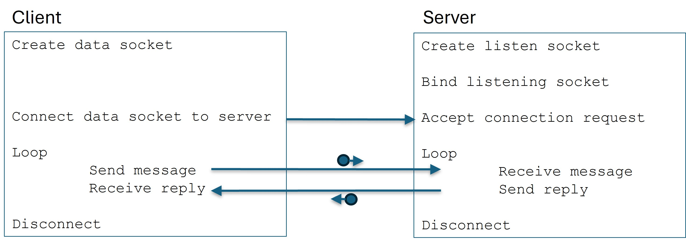
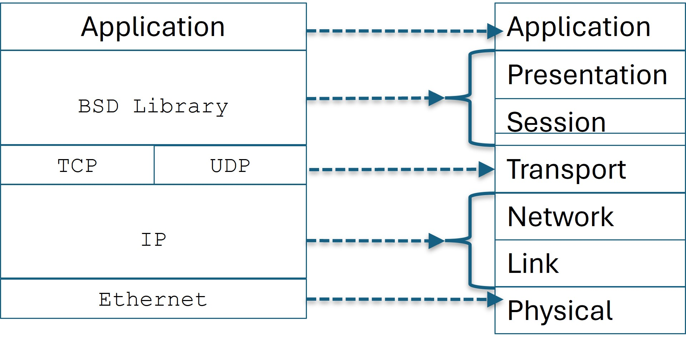

This document describes how to implement client/server applications using the ‘Berkeley Software Distribution’ (BSD) library for ‘sockets’. Two example programs written in C are given.
The Berkeley Software Distribution (BSD) library was developed in the 1970’s as a set of utilities for programmers using the UNIX operating system. As the name suggests, the library was published from UC Berkeley.
Part of the BSD interface was a set of utilities to perform inter-process communication (IPC). It was a sync-up of the protocols defined/developed from the new DARPA INET project (circa 1973) … the research project for the US Army that eventually became the World-Wide-Web. AT&T, the owner of the UNIX copyright, then folded the BSD library into their official UNIX baseline. Eventually, Microsoft and Apple added their own quasi-versions of the BSD library to their operating systems in the 1980s. The BSD library, with additional features, has been part of the Linux distribution since its inception.
The concept behind the BSD team’s approach was that processes on different computers could exchange data through a 'socket. Earlier versions of the UNIX operating system already included a mechanism called a ‘pipe’, which was used for communication between processes on the same node. A ‘socket’ would be similar, but for communication between processes on different nodes on a network.
Both the ‘pipe’ and ‘socket’ interfaces are analogous to that of a ‘file-descriptor’. Reading and writing to a socket would be similar to that of a file. The difference being that the I/O through a socket would be between processes on different nodes on a network. The idea was that programmers were (already) familiar with file operations, so using ‘sockets’ would be similar. An application would ‘open’ a socket, perform read and write operations, and close the socket. But in this case, instead of reading/writing to a file, the data would be transferred between nodes on a network.
A ‘server’ could have socket connections to several clients, receive requests for data, and respond. A ‘server’ would need to create a special socket called a ‘listening’ socket, and a ‘client’ would have to request a connection to the ‘server’. Once the connection is established (i.e. ‘accepted’) the apps can exchange data through the socket.
This section gives C code for both a client and server applications.
A UNIX Makefile is included to compile/link both applications.
Visual Studio project/solution files are also included for a
Windows build. One should be able to copy/paste these
items to files, build them, and run the demo programs.
Section 3 gives details about the mechanics of each program.
The following is an example of a server. The basic protocol is:
The code can be built on either a Windows or Linux platform. The Windows specific code is indicated by the sections:
#ifdef WIN32
…
#endif
/*****************************************************************************
* FILE: TCP_server.c
*
* DESCRIPTION:
* Implements a bare-bones network server. Opens a listening socket and
* waits for connections. Sockets are implemented using TCP.
*
* Receives messages of ASCII text and replies with a simple ack. Accepts
* one or more clients simultaneously. Will close peer-to-peer socket when
* initiated by the client and will accept new connections form the same or
* different clients.
*******************************************************************************/
#include
#include
#include
#ifdef WIN32
#include
#else
/*
* Assume UNIX
*/
#include
#include
#include
#include
#include
#include
#include
#define SOCKET int
#define SOCKET_ERROR (-1)
#define INVALID_SOCKET (-1)
#define WSAEWOULDBLOCK EWOULDBLOCK
#define WSAECONNABORTED ECONNABORTED
#define WSAECONNRESET ECONNRESET
#define WSAENOTCONN ENOTCONN
#define WSAESHUTDOWN ESHUTDOWN
#define min(a,b) ( ( (a) < (b) ) ? (a) : (b) )
#endif
static void Initialize (void);
static void Open_Listen_Socket (const unsigned short port_num);
static void Service (void);
static void Receive_Message (const unsigned int index);
static void Accept_New_Client(void);
static void Shutdown (SOCKET which_socket);
static void Show_Error (const char *msg);
static void Show_Usage_And_Exit (void);
static int Get_Last_Error (void);
static SOCKET listen_socket = 0;
#define MAX_NUM_CLIENTs 16
static SOCKET client_sockets[MAX_NUM_CLIENTs];
/***********************************************
* FUNCTION: main
*
* DESCRIPTION:
* Main entry point of program.
************************************************/
int main (int argc, char **argv)
{
unsigned short port_num;
printf("_____________TCP Server________________________\n");
if (argc != 2)
{
Show_Usage_And_Exit();
}
sscanf(argv[1], "%hu", &port_num);
Initialize ();
Open_Listen_Socket (port_num);
Service ();
Shutdown (listen_socket);
printf("_______________________________________________\n");
return 0;
}
/***********************************************
* FUNCTION: Initialize
*
* DESCRIPTION:
* Initializes internal state. For Win32,
* invokes the startup mechanics.
************************************************/
static void Initialize (void)
{
#ifdef WIN32
WSADATA wsaData;
int result;
result = WSAStartup(MAKEWORD(2,2), &wsaData);
if (result != NO_ERROR)
{
Show_Error ("WSAStartup failed");
exit (EXIT_FAILURE);
}
#endif
memset (client_sockets, 0, sizeof(client_sockets));
}
/***********************************************
* FUNCTION: Open_Listen_Socket
*
* DESCRIPTION:
* Creates a socket, binds it, and then sets
* it to the listening state.
*
* Binding means setting the socket to use
* the IP address of the ethernet card of
* this box.
*
* Listening means it's available (i.e.
* "listening") to accept connection requests
* from clients.
************************************************/
static void Open_Listen_Socket (const unsigned short port_num)
{
int status;
/* don't expect too many clients at once */
int backlog = 1;
struct sockaddr_in my_IP_address_info;
char host_name[256];
struct sockaddr_in *sai = (struct sockaddr_in *) &my_IP_address_info;
char *addr_string;
listen_socket = socket
(AF_INET, /* domain */
SOCK_STREAM, /* type */
IPPROTO_TCP); /* protocol */
if (listen_socket == SOCKET_ERROR)
{
Show_Error ("Create of listen socket failed");
exit (EXIT_FAILURE);
}
/*
* Bind the socket to this ethernet card (or
* whichever device has the IP address).
*/
my_IP_address_info.sin_family = AF_INET;
my_IP_address_info.sin_addr.s_addr = INADDR_ANY;
my_IP_address_info.sin_port = htons(port_num);
status = bind
(listen_socket,
(const struct sockaddr *) &my_IP_address_info,
sizeof(my_IP_address_info));
if (status == SOCKET_ERROR)
{
Show_Error ("bind() failed");
Shutdown (listen_socket);
exit (EXIT_FAILURE);
}
memset (host_name, 0, sizeof(host_name));
status = gethostname(host_name, sizeof(host_name));
if (status == SOCKET_ERROR)
{
Show_Error("Call to 'gethostname' failed");
Shutdown (listen_socket);
exit (EXIT_FAILURE);
}
addr_string = inet_ntoa(sai->sin_addr);
printf("---> Host name....: %s\n"
"---> Address......: %s\n",
host_name,
addr_string);
/*
* Set it to the listening state.
*/
status = listen
(listen_socket,
backlog);
if (status == SOCKET_ERROR)
{
Show_Error ("Set socket to 'listen' state failed");
Shutdown (listen_socket);
exit (EXIT_FAILURE);
}
}
/***********************************************
* FUNCTION: Service
*
* DESCRIPTION:
* Loop that monitors all sockets. New
* connections are established and existing
* connections are serviced.
************************************************/
static void Service (void)
{
int status;
int num_fds = 0;
fd_set read_fds,
write_fds,
except_fds;
struct timeval timeout_val =
{
(long) 2, /* seconds */
(long) 0 /* microseconds */
};
unsigned int counter = 0;
int is_set;
unsigned int i;
printf("\t_____________Begin Service________________\n");
/*
* For this example, not interested in
* 'write' or 'exception' triggers. But
* these can be very useful in a full-up,
* real system ... especially the 'exceptions'
* mask.
*/
FD_ZERO(&write_fds);
FD_ZERO(&except_fds);
for (;;)
{
num_fds = 0;
FD_ZERO(&read_fds);
FD_SET(listen_socket, &read_fds);
#ifdef WIN32
num_fds = 0;
#else
num_fds = listen_socket;
#endif
for (i = 0; i < MAX_NUM_CLIENTs; i++)
{
if (client_sockets[i])
{
FD_SET(client_sockets[i], &read_fds);
#ifndef WIN32
num_fds = num_fds + client_sockets[i];
#endif
}
}
/*
* Have to set 'timeout' each time because
* the select() resets it to "how much time
* was left", which is 0 on a timeout.
*/
timeout_val.tv_sec = 2;
timeout_val.tv_usec = 0;
printf("---> Select on %d sockets\n", num_fds);
#ifndef WIN32
num_fds++; /* see 'man' page on select() */
#endif
status = select (num_fds, /* WIN32 ignores 'nfds' */
&read_fds,
&write_fds,
&except_fds,
&timeout_val);
if (status == SOCKET_ERROR)
{
Show_Error ("Error from 'select'\n");
}
else if (status == 0)
{
printf("\t---> Timeout (status = %d) (%u)\n",
status,
counter++);
if (counter == 15)
{
printf("***> No traffic - exit\n");
break;
}
}
else
{
counter = 0;
for (i = 0; i < MAX_NUM_CLIENTs; i++)
{
if ( client_sockets[i] )
{
is_set = FD_ISSET(client_sockets[i], &read_fds);
if (is_set)
{
Receive_Message(i);
}
}
}
is_set = FD_ISSET(listen_socket, &read_fds);
if (is_set)
{
printf("---> listen socket triggered\n");
Accept_New_Client();
}
/*
* Would probably be good to check
* the 'exceptions' mask here ... but
* skip for this example.
*/
}
}
printf("\t__________________________________________\n");
}
/***********************************************
* FUNCTION: Receive_Message
*
* DESCRIPTION:
* Receives an incoming message off the given
* socket.
************************************************/
static void Receive_Message (const unsigned int index)
{
char message[2 * 1024];
int flags = 0;
int status;
int len;
int err_num;
SOCKET s = client_sockets[index];
memset (message, 0, sizeof(message));
status = recv (s, message, sizeof(message), flags);
if (status == SOCKET_ERROR)
{
err_num = Get_Last_Error();
switch (err_num)
{
case WSAECONNABORTED:
case WSAECONNRESET:
case WSAENOTCONN:
case WSAESHUTDOWN:
{
printf("\t---> Connection to client %u is closed\n",
index);
Shutdown (client_sockets[index]);
client_sockets[index] = 0;
break;
}
default:
{
Show_Error ("Error receiving message");
}
}
}
else
{
printf("\tMessage received...: %s\n",
message);
/*
* Send echo reply ...
*/
sprintf(message, "Message received and understood\r\n\r\n");
len = (int) strlen (message);
status = send (s, message, len, flags);
if (status == SOCKET_ERROR)
{
Show_Error ("Error sending ack");
}
}
}
/***********************************************
* FUNCTION: Accept_New_Client
*
* DESCRIPTION:
* Accepts a connection request from a new
* client via the 'listening socket'.
************************************************/
static void Accept_New_Client(void)
{
struct sockaddr addr_of_new_client;
int addr_size = sizeof(struct sockaddr);
SOCKET new_socket;
unsigned int i;
memset (&addr_of_new_client, 0, sizeof(addr_of_new_client));
#ifdef WIN32
#define ADDR_SIZE int
#else
#define ADDR_SIZE socklen_t
#endif
new_socket = accept
(listen_socket,
&addr_of_new_client,
(ADDR_SIZE *) &addr_size);
if ( new_socket == INVALID_SOCKET )
{
Show_Error ("Accept of new client failed\n");
}
else
{
for (i = 0; i < MAX_NUM_CLIENTs; i++)
{
if (client_sockets[i] == 0)
{
client_sockets[i] = new_socket;
return;
}
}
printf("===> Max number of clients exceeded (%u)\n",
MAX_NUM_CLIENTs);
}
}
/***********************************************
* FUNCTION: Shutdown
*
* DESCRIPTION:
* Issues both a 'shutdown' and a 'close' on
* the specified socket.
************************************************/
static void Shutdown (SOCKET which_socket)
{
int status;
int how = /* disable both sends and receives */
#ifdef WIN32
SD_BOTH;
#else
SHUT_RDWR;
#endif
status = shutdown(which_socket, how);
printf("---> shutdown status = %d\n", status);
#ifdef WIN32
closesocket (which_socket);
WSACleanup ();
#else
close (which_socket);
#endif
}
/***********************************************
* FUNCTION: Show_Error
*
* DESCRIPTION:
* Utility that queries the system to determine
* what error has occurred and writes the info
* to .
************************************************/
static void Show_Error
(const char *msg)
{
char buffer[1024];
int err_num = 0;
memset (buffer, 0, sizeof(buffer));
#ifdef WIN32
err_num = Get_Last_Error();
FormatMessageA
(FORMAT_MESSAGE_FROM_SYSTEM | FORMAT_MESSAGE_IGNORE_INSERTS,
NULL,
err_num,
MAKELANGID(LANG_NEUTRAL, SUBLANG_DEFAULT),
buffer,
(DWORD) sizeof(buffer),
NULL);
#else
perror (msg);
#endif
printf("_________SOCKET_ERROR______\n");
printf("***> Message...: %s\n", msg);
printf("***> Err Num...: %d\n", err_num);
printf("***> Report....: %s\n", buffer);
printf("___________________________\n");
}
/***********************************************
* FUNCTION: Show_Usage_And_Exit
*
* DESCRIPTION:
* Called when the command-line args are not
* correct. Issues a 'how to' message to
* .
************************************************/
static void Show_Usage_And_Exit (void)
{
printf("***> ERROR - invalid argument(s)\n"
"***> USAGE:\n"
"***> server \n"
"***> EXAMPLE:\n"
"***> server 25555\n");
exit (EXIT_FAILURE);
}
/***********************************************
* FUNCTION: Get_Last_Error
*
* DESCRIPTION:
* Thin layer over OS utility that reports
* the value of the last system error.
************************************************/
static int Get_Last_Error (void)
{
#ifdef WIN32
return WSAGetLastError();
#else
return errno;
#endif
}
/* EOF */
The following is an example of a client. The basic mechanics are:
/*****************************************************************************
* FILE: TCP_client.c
*
* DESCRIPTION:
* Implements a bare-bones network client. Creates a TCP socket and
* issues a connection request to the specified server.
*
* User types an ASCII text message, which is then sent to the server. The
* client then waits for a reply. On command, the socket is closed.
*******************************************************************************/
#include
#include
#include
#ifdef WIN32
#include
#else
/*
* Assume UNIX
*/
#include
#include
#include
#include
#include
#include
#include
#define SOCKET int
#define SOCKET_ERROR (-1)
#define WSAEWOULDBLOCK EWOULDBLOCK
#define WSAECONNABORTED ECONNABORTED
#define WSAECONNRESET ECONNRESET
#define WSAENOTCONN ENOTCONN
#define WSAESHUTDOWN ESHUTDOWN
#define min(a,b) ( ( (a) < (b)) ? (a) : (b) )
#define Sleep(t) sleep(t / 1000)
#endif
static void Initialize (char **argv);
static void Request_Connection (void);
static void Service (void);
static void Shutdown (void);
static void Show_Error (const char *msg);
static void Show_Usage_And_Exit (void);
static int Get_Last_Error (void);
static SOCKET the_socket = 0;
static unsigned short port_num = 0;
static char svr_IP_addr_name[16] = "000.000.000.000";
/***********************************************
* FUNCTION: main
*
* DESCRIPTION:
* Main entry point of program.
************************************************/
int main (int argc, char **argv)
{
printf("_____________TCP Client________________________\n");
if (argc != 3)
{
Show_Usage_And_Exit ();
}
Initialize (argv);
Request_Connection ();
Service ();
Shutdown ();
printf("_______________________________________________\n");
return 0;
}
/***********************************************
* FUNCTION: Initialize
*
* DESCRIPTION:
* Initializes internal state. For Win32,
* invokes the startup mechanics.
************************************************/
static void Initialize (char **argv)
{
unsigned int len;
#ifdef WIN32
WSADATA wsaData;
int result;
result = WSAStartup(MAKEWORD(2,2), &wsaData);
if (result != NO_ERROR)
{
Show_Error ("WSAStartup failed");
exit (EXIT_FAILURE);
}
#else
#endif
memset (svr_IP_addr_name, 0, sizeof(svr_IP_addr_name));
len = min((int)strlen(argv[1]), sizeof(svr_IP_addr_name) - 1);
strncpy(svr_IP_addr_name, argv[1], len);
sscanf(argv[2], "%hu", &port_num);
printf("Server:\n"
" IP-address...: %s\n"
" port.........: %hu\n",
svr_IP_addr_name,
port_num);
}
/***********************************************
* FUNCTION: Request_Connection
*
* DESCRIPTION:
* Creates a TCP socket and requests a connection
* to the server.
************************************************/
static void Request_Connection (void)
{
struct sockaddr_in svr_IP_address_info;
int addr_info_len = sizeof(svr_IP_address_info);
unsigned long svr_IP_addr;
int status;
the_socket = socket
(AF_INET, /* domain */
SOCK_STREAM, /* type */
IPPROTO_TCP); /* protocol */
if (the_socket == SOCKET_ERROR)
{
Show_Error ("Create of socket failed");
exit (EXIT_FAILURE);
}
svr_IP_addr = inet_addr(svr_IP_addr_name);
svr_IP_address_info.sin_family = AF_INET;
svr_IP_address_info.sin_addr.s_addr = svr_IP_addr;
svr_IP_address_info.sin_port = htons(port_num);
status = connect
(the_socket,
(const struct sockaddr *) &svr_IP_address_info,
addr_info_len);
if (status == SOCKET_ERROR)
{
Show_Error ("Connect request to svr failed");
Shutdown ();
exit (EXIT_FAILURE);
}
}
/***********************************************
* FUNCTION: Service
*
* DESCRIPTION:
* Loop that monitors all sockets. New
* connections are established and existing
* connections are serviced.
************************************************/
static void Service (void)
{
int status;
int num_fds = 0;
fd_set read_fds,
write_fds,
except_fds;
struct timeval timeout_val =
{
(long) 2, /* seconds */
(long) 0 /* microseconds */
};
char message[1024];
int msg_size;
int flags = 0;
int is_set;
int err_num;
unsigned int timeout_count = 0;
printf("\t_____________Begin Service________________\n");
/*
* For this example, not interested in
* 'write' or 'exception' triggers. But
* these can be very useful in a full-up,
* real system ... especially the 'exceptions'
* mask.
*/
FD_ZERO(&write_fds);
FD_ZERO(&except_fds);
for (;;)
{
memset (message, 0, sizeof(message));
printf("\tType message to send (type 'exit' to end)...: ");
fgets(message, sizeof(message), stdin);
if ( strncmp (message, "exit", 4) == 0 )
{
break;
}
msg_size = (int) strlen(message);
message[msg_size + 0] = '\r';
message[msg_size + 1] = '\n';
message[msg_size + 2] = '\r';
message[msg_size + 3] = '\n';
msg_size = msg_size + 4;
status = send (the_socket, message, msg_size, flags);
if (status == SOCKET_ERROR)
{
Show_Error ("Error sending message\n");
break;
}
FD_ZERO(&read_fds);
FD_SET(the_socket, &read_fds);
#ifdef WIN32
num_fds = 0; /* In Win API 'nfds' is ignored */
#else
num_fds = the_socket;
num_fds++; /* see 'man' page for select() */
#endif
for (;;)
{
/*
* Have to set 'timeout' each time because
* the select() resets it to "how much time
* was left", which is 0 on a timeout.
*/
timeout_val.tv_sec = 2;
timeout_val.tv_usec = 0;
status = select (num_fds,
&read_fds,
&write_fds,
&except_fds,
&timeout_val);
if (status == SOCKET_ERROR)
{
Show_Error ("Error from 'select'\n");
Sleep (5000);
}
else if (status == 0)
{
printf("\t---> Timeout %u (no msg rcv'd)\n", timeout_count++);
if (timeout_count == 15)
{
printf("***> No traffic\n");
break;
}
}
else
{
is_set = FD_ISSET(the_socket, &read_fds);
if (is_set)
{
memset (message, 0, sizeof(message));
status = recv (the_socket, message, sizeof(message), flags);
if ( status == SOCKET_ERROR )
{
err_num = Get_Last_Error ();
switch (err_num)
{
case WSAECONNABORTED:
case WSAECONNRESET:
case WSAENOTCONN:
case WSAESHUTDOWN:
{
printf("\t---> Connection to svr is closed\n");
Shutdown ();
return;
}
default:
{
Show_Error ("Error receiving message");
}
}
}
else
{
printf("\tMessage received...: %s\n", message);
}
break;
}
else
{
printf("***> UNKNOWN ERROR\n"
"***> 'select' triggered ... but no message\n");
return;
}
}
}
}
printf("\t__________________________________________\n");
}
/***********************************************
* FUNCTION: Shutdown
*
* DESCRIPTION:
* Issues both a 'shutdown' and a 'close' on
* the socket.
************************************************/
static void Shutdown (void)
{
int status;
int how = /* disable both sends and receives */
#ifdef WIN32
SD_BOTH;
#else
SHUT_RDWR;
#endif
status = shutdown(the_socket, how);
printf("---> shutdown status = %d\n", status);
#ifdef WIN32
closesocket (the_socket);
WSACleanup ();
#else
close (the_socket);
#endif
the_socket = 0;
}
/***********************************************
* FUNCTION: Show_Error
*
* DESCRIPTION:
* Utility that queries the system to determine
* what error has occurred and writes the info
* to .
************************************************/
static void Show_Error
(const char *msg)
{
char buffer[1024];
int err_num = 0;
memset (buffer, 0, sizeof(buffer));
err_num = Get_Last_Error();
#ifdef WIN32
FormatMessageA
(FORMAT_MESSAGE_FROM_SYSTEM | FORMAT_MESSAGE_IGNORE_INSERTS,
NULL,
err_num,
MAKELANGID(LANG_NEUTRAL, SUBLANG_DEFAULT),
buffer,
(DWORD) sizeof(buffer),
NULL);
#else
perror(msg);
#endif
printf("_________SOCKET_ERROR______\n");
printf("***> Message...: %s\n", msg);
printf("***> Err Num...: %d\n", err_num);
printf("***> Report....: %s\n", buffer);
printf("___________________________\n");
}
/***********************************************
* FUNCTION: Show_Usage_And_Exit
*
* DESCRIPTION:
* Called when the command-line args are not
* correct. Issues a 'how to' message to
* .
************************************************/
static void Show_Usage_And_Exit (void)
{
printf("***> ERROR - invalid argument(s)\n"
"***> USAGE:\n"
"***> client \n"
"***> EXAMPLE:\n"
"***> client 127.0.0.1 25555\n");
exit (EXIT_FAILURE);
}
/***********************************************
* FUNCTION: Get_Last_Error
*
* DESCRIPTION:
* Thin layer over OS utility that reports
* the value of the last system error.
************************************************/
static int Get_Last_Error (void)
{
#ifdef WIN32
return WSAGetLastError();
#else
return errno;
#endif
}
/* EOF */
Two Build options are provided, one for Linux and one for Windows
Copy the above C source files and save them to files named:
TCP_server.c
TCP_client.c
Makefile can be used to build the client
and server applicatins on a Linux node.
It assumes that the gcc compiler is installed.
#==============================================================================
# FILE: Makefile
#
# DESCRIPTION:
# Makefile to build the 'TCP' client and server demo programs.
#==============================================================================
CC=gcc
OPTS=-Wall
CLIENT_EXE=TCP_client.exe
SERVER_EXE=TCP_server.exe
EXE = $(CLIENT_EXE) \
$(SERVER_EXE)
OBJ = $(EXE:.exe=.o)
$(EXE):$(OBJ)
@echo "________________________________"
@echo "Build TCP server"
$(CC) $(OPTS) TCP_server.o -o TCP_server.exe
@echo "Build TCP client"
$(CC) $(OPTS) TCP_client.o -o TCP_client.exe
TCP_client.o:TCP_client.c
@echo "________________________________"
@echo "Compile $?"
$(CC) $(OPTS) -c $?
TCP_server.o:TCP_server.c
@echo "________________________________"
@echo "Compile $?"
$(CC) $(OPTS) -c $?
clean:
@echo "________________________________"
@echo "clean"
rm -f *.o
rm -f *.exe
Makefile. Then invoke the command:
make
This will compile/link both the client and server to the following executables:
TCP_server.exe
TCP_client.exe
To rebuild the applications, use the clean option as follows:
make clean
make
The following files are Visual Studio project files to build the client and server apps for Windows. They are Visual Studio 6.0 (don't be too shocked) project files, so your installation should be able to ‘upgrade’ them to the version you are using.
The first file is a project file and the second is a workspace file and they specify how to build the TCP server.
Make a sub-directory from where the source files are saved. For example:
mkdir TCP_server
server.dsp
server.dsw
TCP Server Project File: server.dsp
|
TCP Server Workspace File - server.dsw
|
|---|
The next two files are the project and workspace files (respectively) to build the TCP client on Windows.
Make another sub-directory from where the source files are saved. For example:
mkdir TCP_client
client.dsp
client.dsw
TCP Client Project File - client.dsp
|
TCP Client Workspace File - client.dsw
|
|---|
After saving the four files, open each workspace file (.dsw) using Visual Studio and they will be upgraded to your latest version (i.e. to a solution .sln file).
After the conversion/upgrade, build both apps.For this demo both the client and the server will be run on the same workstation.
On Linux, to run the applications start, a second terminal window.
The server is started first. In the first terminal start the server by typing:
TCP_server.exe 25555
25555 is the port the server will use to create the
listen socket.
Then, in the second window, start the client by typing:
TCP_client.exe 127.0.0.1 25555
127.0.0.1 is the node's local address and
25555 is the port of the server's listen
socket.
More details about these parameters are given in Section 3.
At the client prompt, type a message. It will be sent to the server who simply replies by echoing back the message it received.
To end both applications, type the command exit at the client prompt. The client will first send that message to the server and then begin the shutdown processing. The server will receive the message and shutdown as well.
CHECK THIS
In this case the client and server are running on the same node. By
specifying the address 127.0.0.1 (also called the
‘local host’ address) the operating system is not really doing
any network traffic because it recognizes that the source node and the
destination node are the same.
To demonstrate actual network communication, you will need to repeat the
build on a different node (i.e. workstation) and then run one of the
applications on that second node. For example, if the client is on
node A and the server is at node B whose IP address is
192.168.10.11, then the command to run the server
is the same:
TCP_server.exe 25555
But the command to run the client is:
TCP_client.exe 192.168.10.11 25555
The command to start the server is the same because the server knows the node it is running on. However, the client must be told where the server is running.
Note that the client could be built and run on a Windows node while the server could be built and run on a Linux node, or vice versa.
That said, ensure that your system administrator doesn't have a fire-wall blocking any unallowed traffic between nodes on the network.
Also, you can have more than one client connect to the server. For this
example, the server will accept connections from up to 16 clients. Thus,
several instances of the client can be started on the same node or other
peer nodes as needed. The server will accept new connection requests even
while servicing messages from previously connected clients. This comes
about by the power of the select() utility from the BSD
interface. This is explained in more detail in Section 3.
A conceptual overview of the client and server applications, and how they interact, is shown in Figure 1.

Figure 1 Client-Server Interaction
The server should start first. It creates a listen socket and then binds that socket to a network device on the workstation (i.e. node). The server then waits for a connection request from a client. The client creates a data socket and then requests that the data socket be connected to the server via the (bound) listening socket. The server accepts the connection from the client. The client then sends a message to the server, the message is received by the server and a reply is sent. The client waits for the reply from the server.
The communication mechanism being used here is loosely based on the Open System Interconnect (OSI) model. The BSD library can support several networking protocols, but in this case the TCP/IP/Ethernet protocols are used.
The DARPA NET effort produced three protocols (sets of rules) for exchanging messages. The first is called the Internet Protocol (IP). It corresponds to the Transport and Link layers of the OSI model. Messages are broken up into packets, sent out over a physical link, and the packets are reassembled by the receiver. An analogy is that a user’s message is assembled into shipping boxes (packets), a shipping label is applied, and the box is sent to the destination. When the boxes are received the receiver uses the labeling to re-assemble the boxes back into the original product. In this case, the sender does not keep track of what packets were actually received, and the receiver will only know if packets somehow didn’t make the trip.
This is where the Transmission Control Protocol (TCP) comes in. It too acts like a shipping and receiving company. It breaks up a client’s message into smaller packets, assigns a shipping label, and hands the packet off to the IP layer. But in this case, the TCP software will wait to receive an acknowledgment that a sent packet was actually received by the destination. Delivery is guaranteed (within physical limits).
The third protocol is called the User Datagram Protocol (UDP). It too simplifies the interface to the IP layer, but without the same level of fault-tolerance and recovery as offered in TCP. The demo programs do not use UDP.
IP packets are small compared to TCP packets and TCP packets are typically smaller than the client’s original message. But if a client’s message can fit in one TCP packet, then that’s OK. The label on a TCP packet (called a ‘header’) will contain all the information the receiver needs to know to re-assemble the packets into the original data. IP packets have less information, so the receiving IP software can only reassemble packets it has received, without knowing if packets didn’t make it. In this case, packets are said to have been dropped. Another error case is that a partial packet was received, or the payload in a package was ‘damaged’, what is called bit-flipping. IP cannot recover from these error conditions, but TCP can.
Also, the IP software makes no commitment to which device-mechanism is used to transport packets, which is the ‘physical layer’. The most prevalent physical layer is Ethernet. But other mechanisms can also be used. In general, the IP software must be tailored to use a particular physical device.
A mapping between the TCP (and UDP), IP, and Ethernet protocols to the OSI model is shown in Figure 2:

Figure 2 - TCP/IP/Physical Mapping to OSI Model
The apps demonstrated here use the TCP and IP protocols to exchange messages. The specifics of how that is established is described below.
Establishing a connection-oriented protocol happens right when the socket is first created. This is illustrated in Figure 1. Three parameters are required:
Next is the ‘type’ of communication to be used. In this case the ‘type’ is STREAM, which means that a client’s message is broken up into smaller packets and then sent over the physical layer as a stream of packets.
The last parameter is the ‘protocol’. In this case the TCP layer is specified to indicate that reliable delivery of messages will occur.
The BSD interface offers many ‘address types’, and ‘domains’ and ‘protocols’. So correlation between them is required in order for the underlying mechanics to work properly.
The applications described here are said to be connection oriented, which means that the apps can communicate similar to a person-to-person phone call. Messages can only be exchanged between the two applications. Messages are also said to be reliable, which means that if an error occurs when a message is sent, then the protocol software will retry.
In this case, the applications are engaging the TCP and IP protocols.
my_socket = socket
(AF_INET, /* domain */
SOCK_STREAM, /* type */
IPPROTO_TCP); /* protocol */
Figure 3 - Create TCP/IP socket
Figure 3 shows the 3 parameters to create the socket.
The following is a review of the processing of the main functions of the server application.
3.1.1.1) Initialize() Function - When building for the
Windows operating system (OS) a function called
WSAStartup() needs to be invoked. This will
initialize some internal objects to prepare the OS that an application is
about to begin network communication. Both the client and the server need
to invoke this when running on a Windows host. The UNIX OS does not
require an initialization.
3.1.1.2) Open_Listen_Socket() Function - This is a
server only function. It creates the listening socket (described
above). It then invokes bind() so that the socket
is mapped to a physical device. An address and a port must be
specified.
In the Internet Protocol (IP) every physical device on a network is assigned a unique address. There are two types of official Internet Protocols, IP version 4 and IP version 6. In IPv4 every physical device has a 32-bit address. In IPv6 every device is assigned a 64-bit address. This document will only discuss IPv4. That said, IPv6 is backwards compatible with IPv4.
IPv4 addresses are usually expressed in dotted-decimal notation,
which is a four byte sequence. An example address is
192.169.10.32. Each byte position can range from
0 to 255.
The TCP component is able to manage several virtual ports on a single physical network device. A port maps to an application’s socket. Therefore, in this configuration, a node can receive message traffic on one (physical) device and route the traffic to different applications through different (virtual) ports (i.e. their socket). Also, as in the case of the server, a single application can simultaneously manage the message traffic of several ports, which are connections to several client applications.
All that said, in this example, the bind() is given an
address called INADDR_ANY, which is an alias to
the address of 00.00.00.00. This tells the BSD
component to chose the default network device on the node. If there’s
only one device, then that device is selected. However, nodes often
have several network devices. In this case, the default device will
be used. If there are several network devices on a node, and the
server application wants to use a specific device, then that
address must be specified in the bind() procedure.
For example, to bind a socket to the device whose address is
192.168.10.20, the following must be done:
struct sockaddr_in svr_IP_address;
unsigned long my_IP_addr;
my_IP_addr = inet_addr(“192.168.10.20”);
svr_IP_address_info.sin_family = AF_INET;
svr_IP_address_info.sin_addr.s_addr = my_IP_addr;
svr_IP_address_info.sin_port = htons(port_num);
bind(listen_socket,
(const struct sockaddr *) &svr_IP_address_info,
sizeof(svr_IP_address_info));
In all cases, a specific port number must be given. It is the application’s responsibility to manage port assignments on a node to avoid collisions with other applications.
The object svr_IP_address, of typestruct sockaddr_in, is used to specify the
communication protocol (i.e. family), the IP address to be
used for the socket (s_addr), and the port number (sin_port).
The struct sockaddr_in is defined to support using the
Internet Protocol.
But the BSD interface can also be used for other networking protocols.
Thus, when invoking the bind() function, the
information is passed using the struct sockaddr
object. This is a kind of variant record in that the
bind() processing will figure out which type
of protocol is to be followed based on key attributes. The caller
uses struct sockaddr_in to specify
Internet Protocol information, type-cast that object to
struct sockaddr and then the
bind() utility will unpack the information to
follow the specified protocol. If a caller uses a different messaging
protocol, then a different structure is used (by the caller) and then
type-cast to the struct sockaddr object. Thus, the
struct sockaddr is a sort of opaque object to a
caller that allows the BSD library the versatility to handle multiple
protocols, not just IP.
Also, note the use of the utility htons(). This
function, which is shortened from host-to-network-short,
byte-swaps the port_num value. The IP protocol requires
that communication between nodes must use big-endian format. This
is called network format.
Though most processors sold today are little-endian, when the TCP and IP protocols were defined the market was fairly well split between big-endian processors (e.g. Motorola) and little-endian processors (e.g. Intel). Also, since the original DARPA research program that defined the TCP, UDP, and IP protocols was for the US Army, and since the DoD required processors to comply with the Mil-Std-1750A format, there was significant propensity towards big-endian architectures.
The BSD library therefore included a set of utilities to perform
byte-swapping. These are generally of the form
htonT() and ntohT(),
where T indicates the type of the scalar item to be
byte-swapped. For example, htonl()
converts a host long int to network form. And
ntohl() does the opposite (network-to-host swap of
long int). It is good practice to use these
utilities on parameters (such as port) no matter what
platform is in use. If already on a big-endian machine then these
utilities are implemented as NOOP because no byte-swapping
is needed. But using them allows for portability between architectures.
After the socket has been bound to the network device, the function
listen() is invoked. This directs the TCP module
to use the socket as a means for other applications to request a
connection to the application. Conceptually, it means the socket is
listening for special messages from peer applications to begin
one-on-one communication. It’s as if the socket is now waiting to
answer a phone call from a client application. The
backlog parameter is used in case several
callers (client applications) are requesting a connection at the same time.
The TCP module will queue multiple requests so the answering application
can process the requests one at a time.
After invoking the listen() function the server
is ready to accept connection requests from peer applications.
3.1.1.3) Service() Function – The server implements this function to respond to activity on the listen socket. Also, once a connection is made to a client application, this function will respond to activity on the new connection.
The ability to monitor traffic from multiple clients is by use of the
system function called select(). It is a
powerful utility that allows an application to watch multiple
input (and output) events from different devices. As mentioned
earlier, sockets were developed to be analogous to reading and writing
to a file. When a client writes to a socket (sends a message), the
TCP module on the receiving node will notify the application that a
new message is ready.
At this point the application is following an event-driven paradigm. Events come into the node, the OS notifies the application, the application responds to the event, and then the application returns to check for more events.
At first, the server uses the select() statement
to notify the OS that it wants to receive events from the listen
socket, since it’s the only socket created so far. When a client asks
for a connection, the select() will return control back to
the server application so it can respond to the request.
The processing for handling a connection request is described in section 3.1.1.4.
Once a connection request has been accepted, there is a new socket between
the server and the client. The server now has two sockets to watch:
the listen socket for any more connection requests from other clients,
and the new data socket to the client. The select() is now
invoked to watch both the listen socket and the data socket. If any events
are triggered on either, or both, the select() will return and
indicate which sockets need to be serviced.
If a message comes in from a client on a data socket, the function
Receive_Message() is invoked. This is described in
section 3.1.1.5.
The select() utility is useful for monitoring events on
devices, not just sockets. But there are nuances in how it is used.
Also, there are differences in how it works on UNIX vs Windows. The
select() utility accepts five parameters:
For example, if the listen socket has an ID of 4 and
one data socket of 7 and a second data socket of 9,
then the nfds parameter will be
4 + 7 + 9 + 1.
However, on Windows, the nfds parameter is ignored. Thus, on Windows, it is simply set to 0.
The parameter has the type-form of fd_set.
It is a rather clunky structure that is intended
to be opaque to the user. The original BSD package
used a masking mechanism as a way to notify the OS
as to which devices to monitor for IO events. Later
releases implemented the
fd_set structure as an attempt to try
to simplify the interface.
Nonetheless, special macros are provided to
clear, set, and check
fds parameters. The macro
FD_ZERO() will clear a parameter.
Then, the FD_SET() will set the
parameter to a particular socket to watch. The
syntax is of the form:
FD_SET([socket], &[fds]);
For this example, the writefds is not
used and is left initialized at zero.
exceptfds parameter.
In this example, the exceptfds
is not used and is initialized to zero. However,
this parameter could be used in more sophisticated
applications. But such applications must build a
fault-tolerance mechanism to handle such events,
and such processing can be quite extensive.
select()
statement how long to wait for an event to occur
before returning. There are three ways to use this
parameter. First, the value can be set so
the select() makes an immediate check of
all devices (sockets) and returns immediately. Second,
a time value can be specified. If no events occur in
the given time period, the select() will
return to the caller (and indicate that it timed-out).
But if one or more events are triggered against the
devices, then the select() will return
before the timeout. Thirdly, the
select() can be directed to
wait-forever for one or more triggers to occur.
The caller is blocked on the select()
until an event occurs.
Note that if the select() returns because
an event occurs before the timeout expires, then, on
return, the timeout object will be set to
the time remaining.
select() which devices to monitor.
Then, on return, these parameters are set by the
select() utility to indicate which, if any, devices have
been triggered. On return the caller will use the macro
FD_ISSET() to determine if an event has occurred on a
socket. The syntax is:
int is_set = FD_ISSET([socket], &[fds]);
If no event has occurred, then zero is returned. Otherwise, an event has occurred and the caller must respond, which means it’s time to read an incoming message from the peer.
The processing to receive a message is described in section 3.1.1.5.
Once the server has responded to events on any sockets, it loops back
around to check the sockets for more events. It is good practice to
use the FD_ZERO() on each input parameter before making
another call to the select() utility. It’s clumsy to leave a
value set from a previous return from select() and remember
that it doesn’t need to be set. Or worse, that the processing of a
socket was for shutdown of a socket and thus leaving the fds value
set for a stale socket.
3.1.1.4) Accept_New_Client() Function - When a connection request
comes in from the listen socket, the server will then invoke the
utility accept(). This notifies the TCP module to create
a new one-to-one connection with the client. A new socket is returned
from this call to accept(). The TCP module will create a new
(local) port that corresponds to the new socket. The accept()
function will also return the client’s IP address and port. The
new socket is ready for two-way communication with the client.
3.1.1.5) Receive_Message() Function – This server function receives
an incoming message from a client and sends an echo message back to
the client. It uses the recv() utility to read the
incoming message and the send() utility to send the
response.
The recv() utility copies the incoming message from the
TCP module to an application buffer. The buffer and the size of the buffer
are specified when calling recv(). If the message is too
large for the application’s buffer, then an error condition is returned. For
this simple client-server example the size of messages are expected to be
small … just a short message typed at the keyboard by the user. If
large messages are to be processed then it may be necessary to use
the setsockopt() utility to increase the size of the
TCP internal message buffer. It may involve some trial-and-error testing to
determine the required size. Even so, there is a limit to how large
the TCP internal message buffer can be increased at run time.
Note that a call to recv() may return more than one
message. The select() will return that a socket is
ready for reading when a message comes in. But by the time the application
calls the recv() the client may have sent another
message, or more. Thus, depending on the application requirements, a more
robust implementation would be prepared to handle multiple messages
when the recv() returns.
Using TCP ensures that complete messages are in the returned buffer. But good practice usually has messages that start with a short header that indicates an ID and the size of the incoming message. This helps in determining how to handle the message. Thus, based on the header information, the receiving application can know where one message starts and the next begins, etc.
The fourth parameter in the recv() utility is
flags.. There are several constants that can be
logically OR’d together to specify additional processing by the
recv() utility. Use of these flags can add significant
complexity but can be quite useful depending on run-time requirements of the
application.
Perhaps the simplest constant is MSG_PEEK, which allows
the caller to receive a copy of the received message, but the message remains
in the TCP buffer as well. This feature might be useful in
multi-threaded applications that share access to a socket. That
said, this client-server demo simply sets flags to 0,
which means copy the message(s) and clear the TCP buffer. The
send() utility is used to send a message back to the
client. It is mirror a image of recv(): a message in
a given buffer of a specified size is sent out the socket to the peer
application. It too has a flags parameter. Again, for
this demo, it is simply set to 0 so no special processing is done to send
the message.
Both send() and recv() return status.
It is good practice to check the error status and handle accordingly.
3.1.1.6) Shutdown() Function – Termination of a socket uses the
shutdown() utility followed by
close(). The shutdown() notifies
the system that the socket will not be used for communication
anymore. The TCP module will notify the peer TCP module that the
corresponding port is being closed and that the peer node should
close its side as well. Internal data structures and state are
cleared. After the shutdown(), the
close() utility is invoked. Similar to a file, the
OS ‘descriptor’ associated with the socket must be cleared. On UNIX the
call is close() but on Windows the
call is closesocket().
The following is a review of the functions implemented in the
tcp_client.c program.
3.1.2.1) Initialize() Function – This is the same as the server function. It is a Windows only function.
3.1.2.2) Request_Connection() Function – The client creates a
socket and then invokes the utility called connect().
It implements a process in which a message is sent to the
listen socket of the server. Therefore, the client must
specify both the IP address and port of the server’s listen socket.
Similar to the bind() by the server, the client uses a
struct sockaddr_in object to set the IP address and port
of the server’s listen socket. The object must be type-cast to
a struct sockaddr object when invoking
connect(). If the connect() is
successful (which means the server has accepted the connection
request), then the client’s socket can now be used for communication with the
server.
3.1.2.3) Service() Function – This is the mirror image of the
server’s function of the same name. It queries the user to type
a message at the command prompt. The send() utility is
then used to send the user’s message to the server. It then invokes
the select() utility to detect when the response
message from the server has been received. The initialization
and usage of the select() utility, including the
setting of the readfds is analogous to the processing done on
the server side. If the select() times out, it
simply loops around and makes another check, indicating that
no response was received. When a message is received,
the select() will indicate that the socket is now
ready to read the response message from the server. The
recv() utility is invoked and the message is
printed (to
3.1.2.4) The Shutdown() Function – This function is the same as
implemented for the server. When communication is completed the
utility shutdown() is invoked, followed by
close().
Up to this point, the sockets created in these example programs
are said to be blocking sockets. This means that when a call
to read a socket is made (i.e. recv() is invoked) the
call will block until a message is received. Communication via sockets
is said to be asynchronous. This means that an application has
no guarantee on when the next message will be sent. Developers
should not expect real-time performance when using sockets.
When recv() is invoked, control will not return to the
caller until at least one complete message has been received. Similarly,
invoking the send() utility will block until the peer
side is ready to receive a message. If the receiver is busy processing
a previous message, the sender will block until the peer signals that
it is ready to receive another message.
However, sockets have another mode of operation called non-blocking.
In this mode, invoking recv() will return immediately if
no message is available, or only a partial message has been received. The
application will need to poll on the socket until a complete message has
been received.
Invoking send() on a non-blocking socket means the
send() utility may immediately return an error condition
indicating that the message was not sent. The sender must make repeated
attempts until the peer is ready to receive another message.
When sockets are created, the default state is blocking. To change a
socket from blocking to non-blocking, the utility ioctl()
is used. An example invocation follows:
#include "sys/ioctl.h"
int s;
int non_blocking = 1;
s = ioctl(my_socket, /* fd */
FIONBIO, /* request */
&non_blocking); /* set to non-blocking */
Using blocking vs non-blocking sockets is a design decision and depends
on the requirements of the applications. Implementing a non-blocking
design usually indicates an application that is rather CPU intensive,
one that can’t wait for incoming or out-going messages to cause other
processing to be delayed. It is usually a delicate design. There may
even be use cases where sockets switch from blocking to non-blocking
and back based on requirements of the system.
Up to this point, the UDP interface was mentioned only is passing. That said, one of the most significant differences between the TCP and UDP is that UDP does not guarantee delivery of messages. Also, by default, UDP sockets are non-blocking and, furthermore, they can’t be made blocking. They are often described as ‘send-and-forget’. Usage of blocking TCP, non-blocking TCP, or UDP sockets is a design decision best made early.
select() statement vs threads
This example uses the BSD utility select() to monitor
events on the sockets. It’s a single loop that blocks for a
timeout. If no events occur, then the application loops around
to check for more traffic. While not a CPU hog, it implements
a monolithic architecture.
Blocking vs Non-Blocking configurations must also be considered. Many threads polling on non-blocking sockets on a legacy system may present throughput issues.
[1] A Brief History of the Internet & Related Networks, https://www.internetsociety.org/internet/history-internet/brief-history-internet-related-networks
[2] International Organization for Standardization – Open System Interconnection, ISO/IEC 7498-1:1994, https://www.iso.org/standard/20269.html
[3] "TCP/IP Illustrated, Volume 1: The Protocols", WR Stevens, ISBN 0-201-63346-9
[4] "TCP/IP Illustrated, Volume 2: The Implementation", WR Stevens, GR. Wright, ISBN 0-201-63354-X